⭐ 3行で言うと
- 1コマンドでアプリが出来ました。「メモ帳アプリを index.html 1枚だけで」と頼むと、69秒・7ターン・$0.44 で 11,511 bytes のファイルが1枚。作成・編集・削除・localStorage保存・検索まで入っていました。
- ただしAIは動作確認をしていません。確認用の Bash を許可していなかったので4回拒否され、「動作確認のためのシェル実行は権限待ちで止まったため、コードレビューで代替しています」と自己申告して終わりました。動くかどうかは、こちらで Playwright を書いて確かめました（全機能動きました）。
- 機能追加も1コマンドでした。「ダークモード切替を足して」で 98秒・16ターン・$0.54。作るより足すほうが高いという結果です。合計 $0.98・167秒。
先に4語だけ意味
claude -p — 対話画面を開かず、1回の指示で答えて終わる使い方（前日の記事で実測済み）- ターン — Claude が道具を使って考え直せる回数。JSONの
num_turns に出る
- localStorage — ブラウザがサイトごとに持つ保存領域。サーバー無しでデータが残る
- Playwright — ブラウザを機械で操作する道具。人の代わりにクリックして確かめる
11コマンド目 — 69秒で index.html が1枚できた
頼んだのはこの1行です。作業用の空フォルダで打ちました。
打ったコマンド（段2）
claude -p "ブラウザで動くメモ帳アプリを index.html 1枚だけで作って。複数メモの作成・編集・削除、localStorage保存、日本語UI。外部ライブラリ無し" \
--allowedTools Write --output-format json
段2 の実測
exit=0 wall=69s
is_error False
subtype success
num_turns 7
total_cost_usd 0.4426
--- 出来たファイル ---
index.html 11,511 bytes (1枚だけ)
69秒で、index.html が1枚だけ出来ました。7ターン、$0.44。頼んだとおりファイルは増えていません。
競合の解説動画は「30分で作れた」「1時間で完成」を見出しにしていますが、この規模（1画面のメモ帳）なら体感は1分ちょっとです。もちろん規模が大きければ伸びます。この記事は「この頼み方で、この規模なら、この数字だった」という1点の実測です。
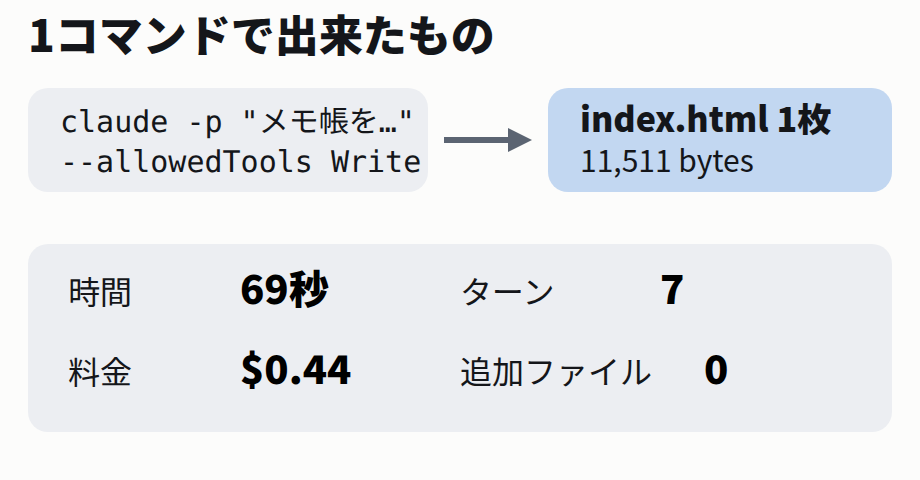
1コマンドの中身と、出てきたもの。
2打ったコマンドの3つの部品
コマンドは3つの部品で出来ています。どれも前日の記事（Claude Codeの自動化）で1つずつ実測した旗です。
| 部品 | 何をしているか |
|---|
-p "…" | 対話画面を開かず、1回の指示で終わる |
--allowedTools Write | ファイルを書く道具だけを許可する |
--output-format json | 結果を機械が読める形で受け取る（ターン数・料金・拒否の記録が入る） |
大事なのは --allowedTools Write です。渡していない道具は使われません。今回は「書く」以外を渡していないので、コマンド実行やファイル削除は構造の上で起きません — そしてこの絞りが、第4章の面白い挙動を生みます。
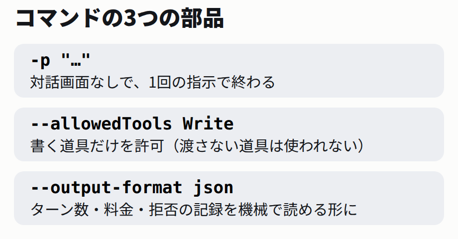
3つの部品。すべて前日の記事で個別に実測済み。
3出来たアプリに入っていたもの
出来た index.html をブラウザで開くと、2ペインのメモ帳が表示されます。実画面がこちらです。
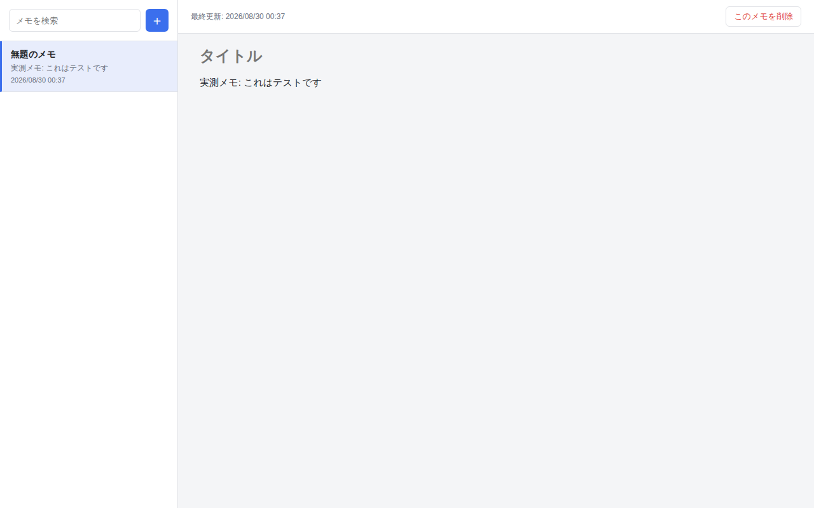
実画面（Playwrightで撮影）。左が一覧、右が編集欄。
頼んだのは「作成・編集・削除・localStorage保存・日本語UI」の5つですが、頼んでいないものも入っていました。検索ボックス、更新日時の表示、削除前の確認ダイアログ、空のときの案内文です。
| 頼んだもの | 頼んでいないのに入っていたもの |
|---|
| 複数メモの作成・編集・削除 | メモの検索ボックス |
| localStorage保存 | 更新日時の表示 |
| 日本語UI | 削除前の確認ダイアログ |
| 外部ライブラリ無し | 「メモがありません」の案内 |
今回の4つはどれも妥当な補完でした。ただし仕様を厳密にしたい仕事では、この「気を利かせる」ぶんが差分になるので、要る・要らないは指示に書くのが確実です。
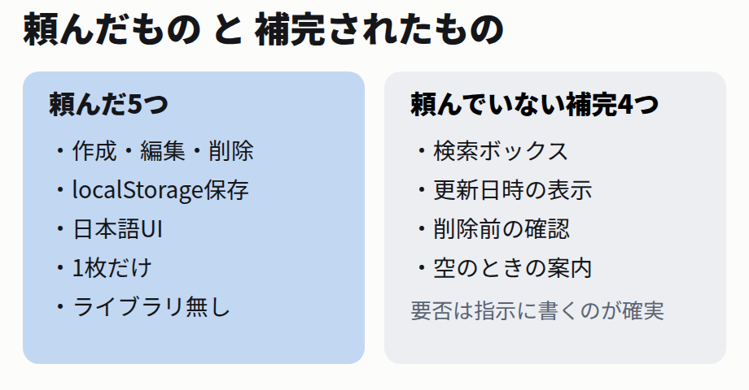
頼んだもの5つ、頼んでいない補完4つ。
4AIは動作確認をしていない
JSONの記録を見ると、面白いことが起きていました。permission_denials（拒否された道具の記録）に Bash が4回並んでいます。
段2 の permission_denials（要約）
permission_denials ['Bash', 'Bash', 'Bash', 'Bash']
中身: ls での確認 /
node --check での構文チェック ×3Claude は作ったあとに、自分で ls や node --check を打って確かめようとしています。でも許可したのは Write だけなので、全部拒否されました。そして応答の冒頭で、こう自己申告しています。
応答の冒頭（原文）
実装完了しました。動作確認のためのシェル実行は
権限待ちで止まったため、コードレビューで代替して
います(構文は単純なVanilla JSで問題ありません)。
つまりこの時点で、「動く」とはAI自身も言っていません。「コードを読み直した限り問題ないはず」と言っているだけです。前日の記事の結論と同じ場所に戻ってきました — 出来たかどうかは、結果そのものを確かめるしかない。
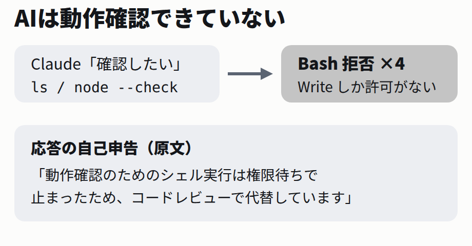
作ったAI自身は、動くことを確かめられていない。
5動作は Playwright で自分で確かめた
なので、動くかどうかはこちらで測ります。Playwright でブラウザを機械操作して、頼んだ機能を1つずつ確かめました。
段4 の実測
作成 → 一覧に「無題のメモ 実測メモ: これはテストです」
リロード → 残る (localStorage: simple-memo-app-notes)
削除 → localStorage は [] / 一覧は「メモがありません」
全部動きました。作ったメモはリロード後も残り、削除すると localStorage からも消えます。検証スクリプトは _labs/2026-08-30_webapp-build/test_app.py にあり、そのまま流用できます。
確認の観点は「頼んだ機能の数」だけです。作成・編集・削除・保存の4点。見た目の良し悪しはこの記事では測っていません（スクリーンショットを見て判断してください）。
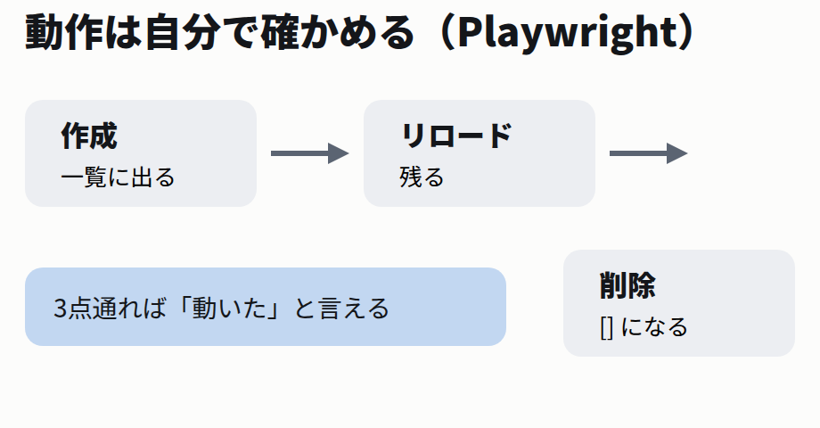
作成→残る→消える。3点が通れば「動いた」と言える。
6試験側の罠 — ブラウザは起動ごとに新品になる
正直に書くと、検証の途中で一度「保存が消えた」と誤判定しかけました。原因はアプリではなく、試験のやり方です。
段5 の記録
ブラウザを起動し直すたびに新品のプロファイルになり、
localStorage が空で「メモが消えた」と誤判定しかけた。
保存の検査は同じセッション内のリロードで行う。
Playwright が起動するブラウザは毎回まっさらなプロファイルです。localStorage も空から始まるので、前回作ったメモが見えないのは当たり前でした。保存の検査は「同じセッションの中でリロードして残るか」で行います。
AIの作ったものを疑うときは、先に自分の試験を疑う。この2日間で2回目の教訓です（前日は拒否の記録が揺れる話でした）。
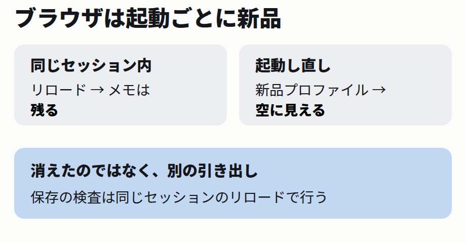
消えたのではなく、別の引き出しを開けていた。
72コマンド目 — ダークモードを足させる
次に、出来たアプリへの機能追加を1コマンドで頼みます。今度は新規作成ではないので、Read と Edit（既存ファイルの読みと書き換え）だけを渡しました。
打ったコマンド（段6）
claude -p "index.html のメモ帳にダークモード切替ボタンを足して。設定はlocalStorageに保存、初期値はOSの設定に従う" \
--allowedTools "Read Edit" --output-format json
段6 の実測
exit=0 wall=98s
is_error False
num_turns 16
total_cost_usd 0.5371
permission_denials ['Bash', 'Bash']
98秒・16ターン・$0.54。ここでも Bash の確認を2回試みて、2回拒否されています。動作はまた Playwright で測りました。
段7 の実測
背景 rgb(244,245,247) → rgb(26,27,30)
リロード後も rgb(26,27,30) / localStorage theme=dark
切替も、リロード後の保持も動きました。🌙ボタンが検索欄の隣に付き、設定は localStorage に入ります。
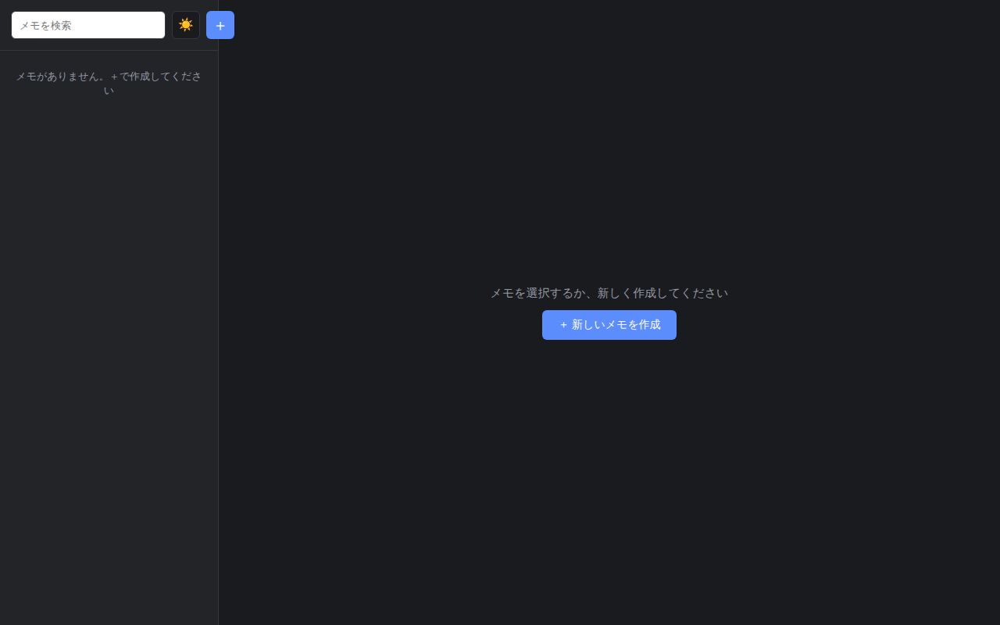
実画面。2コマンド目のあと、背景が dark に切り替わる。
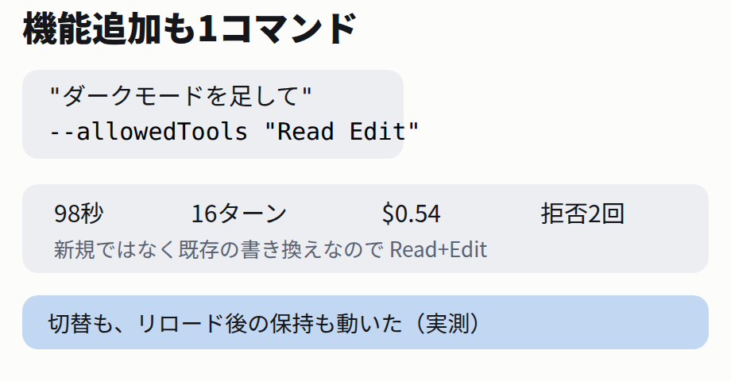
追加の1コマンド。渡す道具は Read と Edit に変わる。
8いくらかかったか — 作る$0.44、足す$0.54
2つのコマンドの数字を並べます。
| 1コマンド目（新規作成） | 2コマンド目（機能追加） |
|---|
| 時間 | 69秒 | 98秒 |
| ターン | 7 | 16 |
| 料金 | $0.4426 | $0.5371 |
| Bashの拒否 | 4回 | 2回 |
ゼロから作るより、既存に足すほうが高くつきました。時間もターンも料金も、追加のほうが上です。既存のコードを読み、壊さない場所を探して差し込む工程が挟まるためと見られます（ターン数16のうち、読みに使った往復が乗っています）。
合計は $0.98・167秒・23ターン。この料金は API 従量課金の換算値で、定額プランなら請求は増えません（前々日の記事で実測済み）。
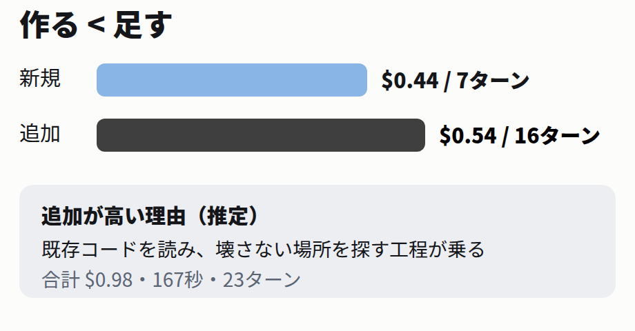
作る < 足す。読みの工程が乗るぶん追加が高い。
9指定が効いた2語 —「1枚だけ」「外部ライブラリ無し」
頼み方の中で、結果にはっきり効いた指定が2つあります。
- 「index.html 1枚だけで」 — 出来たファイルは本当に1枚でした。この指定が無いと CSS や JS が別ファイルに割れることがあり、コピーして持ち運ぶのが面倒になります
- 「外部ライブラリ無し」 — 出来た HTML に CDN の読み込みは1行もありません。ネットが無くても開けます
どちらも「動くか」ではなく「出来上がりの形」を縛る指定です。機能の列挙だけだと形はAI任せになります。持ち運びたい・オフラインで使いたいなど、形の要件があるなら1語ずつ書いてください。
なお「日本語UI」も効いています。ボタン・案内文・確認ダイアログまで全部日本語でした（第3章の実画面のとおり）。
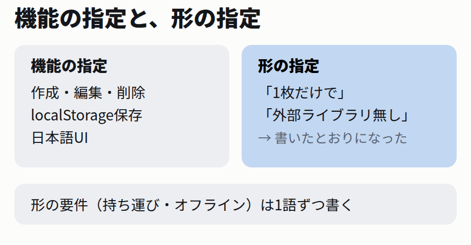
機能の指定と、形の指定。効き方が違う。
10同じことをやる2コマンドの型
今日の実測を、そのまま使える形にまとめます。
作る（新規）
claude -p "〈何のアプリか〉を index.html 1枚だけで作って。
〈機能を列挙〉、〈保存方法〉、日本語UI。外部ライブラリ無し" \
--allowedTools Write --output-format json
足す（追加）
claude -p "index.html に〈機能〉を足して。〈保存や初期値の要件〉" \
--allowedTools "Read Edit" --output-format json
- 1. 道具は工程に合わせて絞る。新規は
Write、追加は Read Edit。渡していない道具は使われない
- 2. 形の要件は言葉にする。「1枚だけ」「外部ライブラリ無し」は書いたとおりになった
- 3. AIの「問題ありません」は動作確認ではない。今回は2回とも Bash を拒否されており、AIはコードを読み直しただけ。動くかは自分で開いて確かめる
- 4. 保存の検査は同じセッションのリロードで。ブラウザを起動し直すと localStorage は新品になる
この型で出来るのは「1画面の道具アプリをローカルで動かす」ところまでです。インターネットへの公開（デプロイ）は今回測っていません。
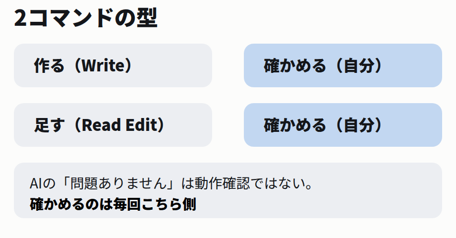
作る→確かめる→足す→確かめる。確かめるのは毎回こちら側。
参考文献
この記事の主張は、次の資料と自分の実測だけに基づいています。読んでいない資料は引用しません。
-
自分の実測
Claude Code 2.1.251 / Linux x86_64。2026年8月30日 09:32〜09:40 JST に実行。
参照箇所を見る
再現一式は _labs/2026-08-30_webapp-build/（run_all.sh・output.txt・step2.json・step6.json・検証スクリプト test_app.py/test_dark.py）。記事の数字（69秒/98秒・7/16ターン・$0.4426/$0.5371・拒否4/2回・11,511 bytes）はすべて --output-format json の生データと実測ログから。実画面は Playwright のスクリーンショット。料金・時間・ターン数・「頼んでいない補完」の中身は実行のたびに変わりうる。
-
自分の意見
第3章「要る・要らないは指示に書くのが確実」、第9章「形の要件は1語ずつ書く」は、今回の実測を踏まえた運用上の目安。第8章の「追加が高いのは読みの工程が乗るため」は num_turns の差からの推定で、内部の仕様を確かめたものではない。
-
未確認
インターネットへの公開（デプロイ）、複数ファイル構成での挙動、もっと大きい規模のアプリ、
--permission-mode acceptEdits でやった場合の差、同じ指示を複数回叩いたときの出来上がりのばらつき（1回ずつしか実行していない）。
なぜ未確認か
公開はこの検証環境から外部サービスへ出せないため。ばらつきは、今日の枠では1回ずつの実測に留めたため（コマンドと数字を残してあるので、回数を重ねれば分布が取れる）。
-
関連する自分の記事
Claude Codeの自動化（-p・--allowedTools・permission_denials の個別実測）、使用量と料金の確かめ方（$表示が請求額ではない話）。